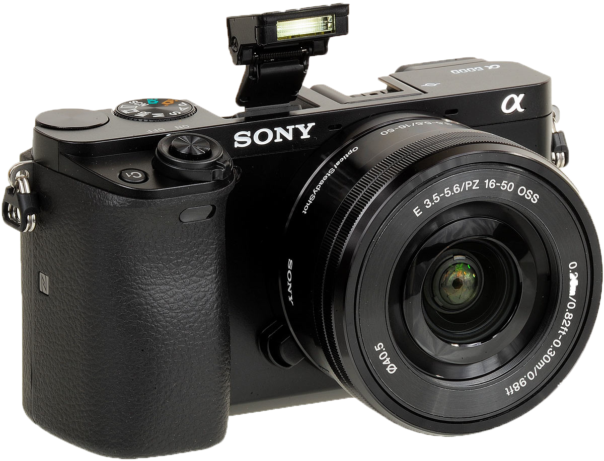

Camera
Invest in a camera.
This is the natural progression from using an iPhone or laptop to film your video. There are tons of options, but we’ve found a high ROI and love the end results from the Canon SL1.
When you buy a better camera, you’ll also want to buy a tripod to match.
